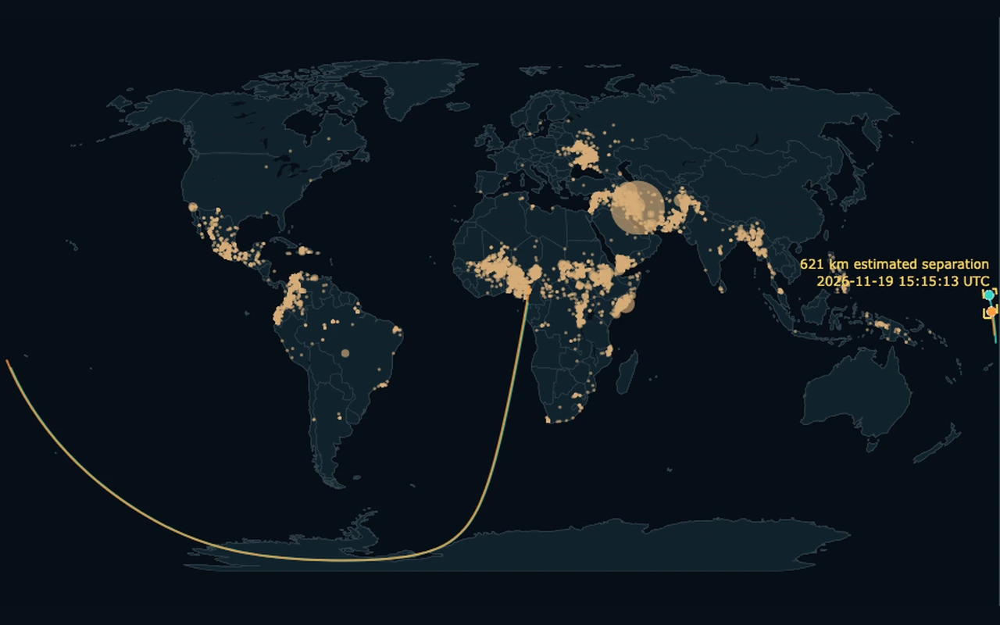

Explore War Maps / 01
Conflict map
Locate recorded conflicts and events across places and years. Explore the geography, then open the underlying records.
Open Conflict map →Public evidence · connected without taking sides
News reports show moments. War Maps helps you see the conflict around them: the people and organizations involved, the places and dates in the public record, the relationships among them, and the human conditions that headlines leave outside the frame.
A path from headline to context
Locate recorded conflicts and events across a time window, then open the source-bounded record behind the map.
Open the world map → 02 · Participants and eventsFollow one conflict through sides, states, actors, locations, and dated observations without turning proximity into blame.
Open a conflict network → 03 · RelationshipsInspect recorded same-side participation and sourced organization membership. Every line has a disclosed rule.
Follow relationships → 04 · Human costCompare reported civilian deaths by place and time while keeping incomplete coverage and incompatible estimates visible.
View civilian deaths → 05 · Living conditionsPlace conflict observations beside population, mortality, life expectancy, fertility, and birth-rate records—never as a causal shortcut.
Compare living conditions → 06 · Hormuz shippingReported vessel positions on an isometric map, sampled tracks and separately dated daily crossing counts.
View shipping → 06 · Material contextCompare source-dated gasoline and diesel prices with consistent units, fixed scales, local resolution, and linked publishers.
Compare pump prices → War RoomExplore native atlas maps on a perspective table beside three independent live-news screens, with draggable controls and nation shortcuts.
Open War Room → 07 · Live coverageCompare international live-news coverage while keeping broadcasts separate from verified records and project inference.
Open NewsMedia →How to read every view
A value or relationship present in a named upstream dataset. The producer, version, date, unit, and coverage boundary should be inspectable.
A disclosed join, total, conversion, layout, or visual scale created by War Maps from source records.
An explicitly labelled analytical interpretation. It can organize questions, but it does not become a sourced fact or legal conclusion.
A gap stays a gap. The interface does not silently interpolate missing years, infer motives, or turn no record into no event.
Current loaded boundary
These counts describe the current repository build. They do not describe all wars or all events in the world. Inspect coverage and missingness or open the complete source guide.
GLOBAL HUMAN COST
This clock represents an estimated 0 people killed thus far this year. Spread evenly over the year, that is roughly one person every 250 seconds.
The band counts at that rate. Click the band to open this memorial and honor the dead with a moment.
Source basis: 140,009 recorded estimates in the loaded January-September candidate releases. The cadence distributes that partial-year source snapshot evenly through 2026; a flash does not report an individually observed death.